الخط الأخضر هو خط الهدنة لدولة إسرائيل مع
مصر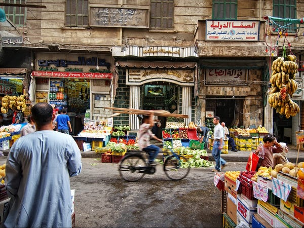 والأردن وسوريا و
لبنان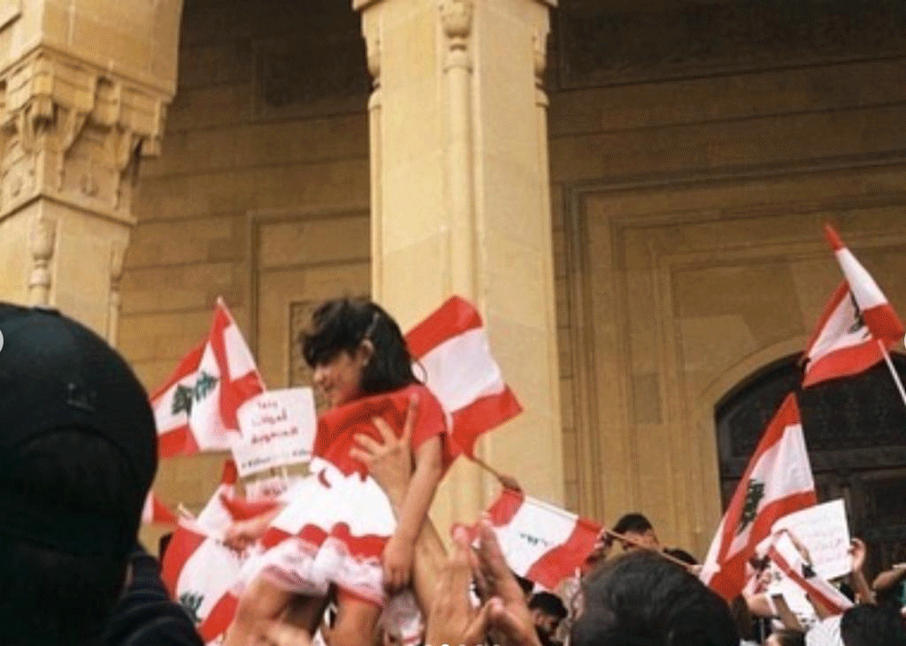، كما هو منصوص عليه في اتفاقيات الهدنة الموقعة في عام ١٩٤٩، بعد
حرب الاستقلال وحرب الأيام الستة في عام
١٩٦٧
. وقد أُعطي له
اسمه أنه في الخرائط المطبوعة أمام حرب الأيام الستة، كان يحمل
علامة خضراء.
الأسماء المستعارة الإضافية للخط الأخضر هي ”
الحدود
٤ يونيو ١٩٦٧" و ”
الحدود ٦٧" و ”
الحدود ٤٨".
عكست حدود إسرائيل قبل عام
١٩٦٧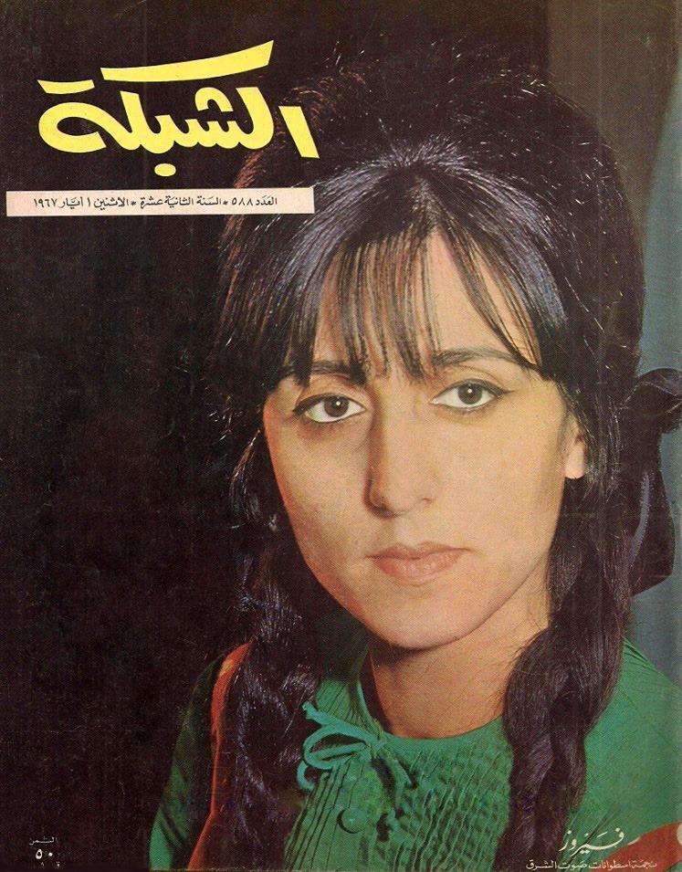 تحليل القوات الإسرائيلية و
العربية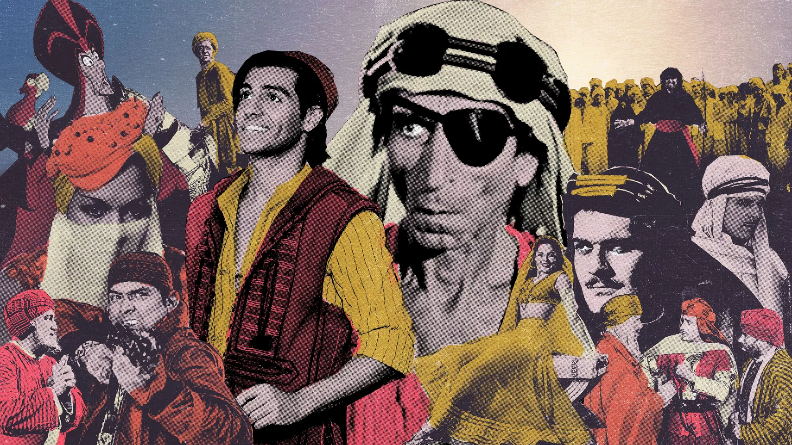 في أعقاب اتفاقات
الهدنة بعد
حرب الاستقلال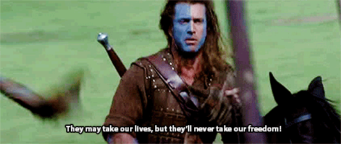. ولم يكن رسمياً خطاً حدودياً، بل كان فصلاً بين القوات بين إسرائيل والدول المجاورة. وتستخدم غالبية
الخط الأخضر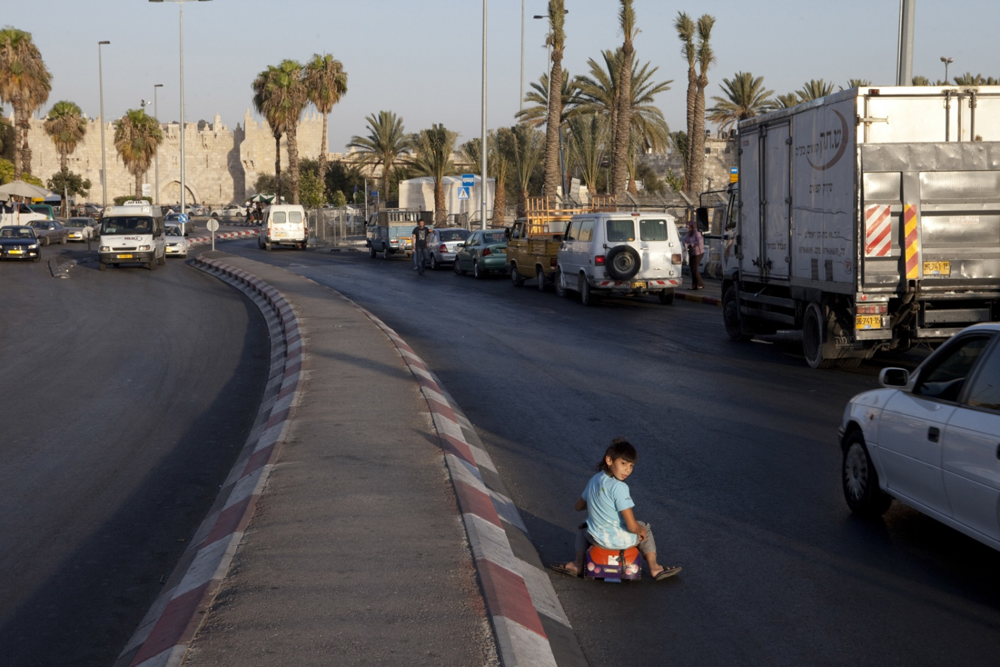 اليوم كحدود إدارية بين الأراضي المحتلة وسيادة إسرائيل، والمناطق التي تديرها
الحكومة العسكرية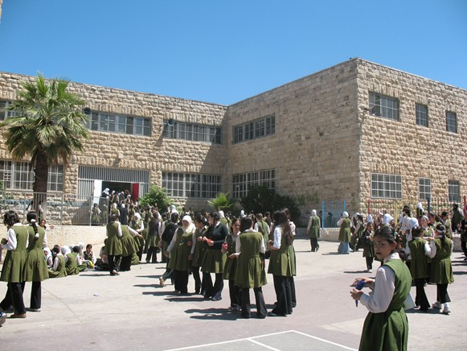 أو بموجب اتفاقات مع السلطة الفلسطينية. فعلى سبيل المثال، في
اتفاق تعاون
تم توقيعه بين منظمة ماغن دافيد أدوم والهلال الأحمر
الفلسطيني، في كانون الأول/ديسمبر ٢٠٠٥، تم تصميم الخط الأخضر على تحديد
الحدود بين مناطق النشاط الجغرافي للمنظمات.
كان الخط الأخضر يدور حول
٧٨٪
من
الجانب الغربي من
الانتداب البريطاني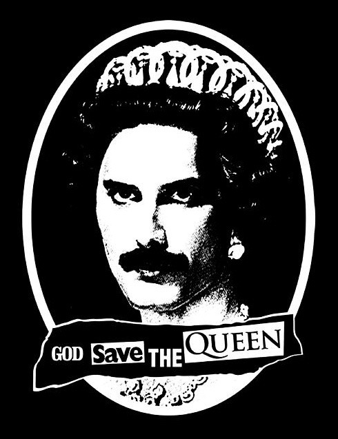 الذي بدأ من عام ١٩٢٢ لم يعد يشمل معبر شرق الأردن. كان لديه حدود منطقة الانتداب مع سوريا ولبنان، وغالبية الحدود مع
مصر
، والحدود مع الأردن في أرافة وطيرات زفي، وإلى حامات جادر. احتل الأردن جزءا ً كبيراً من
المنطقة الجبلية
في
وسط البلد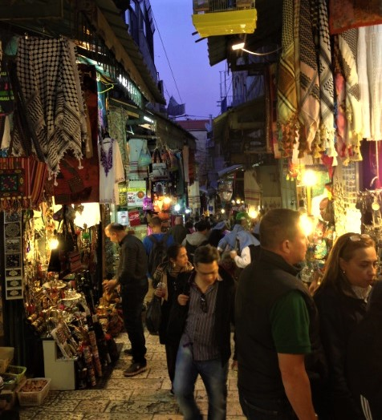 في عام ١٩٤٨. وقد ضم الأردن و"
الضفة الغربية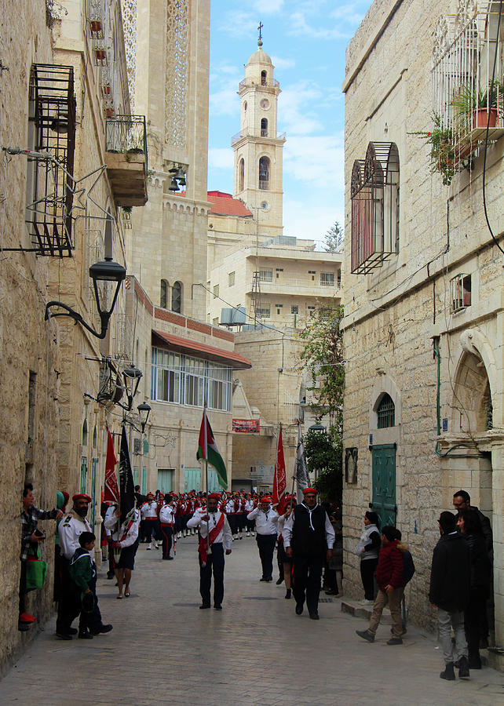" هذه المنطقة إلى الغرب من
نهر الأردن لتمييزها عن بقية المملكة الأردنية الهاشمية التي وجدت شرق نهر الأردن. في إسرائيل كانت تسمى المنطقة "يهودا والسامرة". نُقل شريط ضيق على طول
شاطئ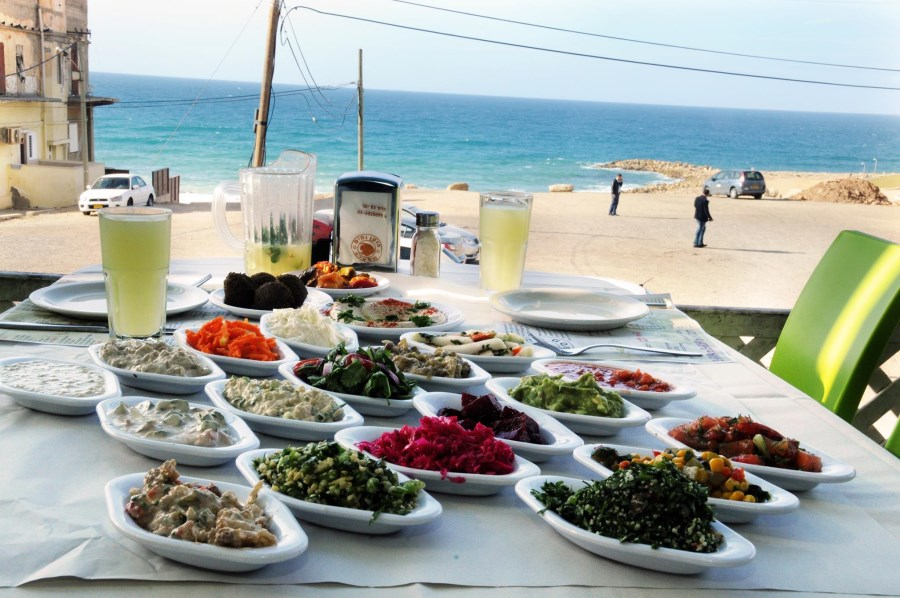 الساحلي الجنوبي إلى السيطرة العسكرية المصرية، وأطلق عليه اسم "قطاع غزة".
הקו הירוק הוא קו שביתת הנשק של מדינת ישראל עם
מצרים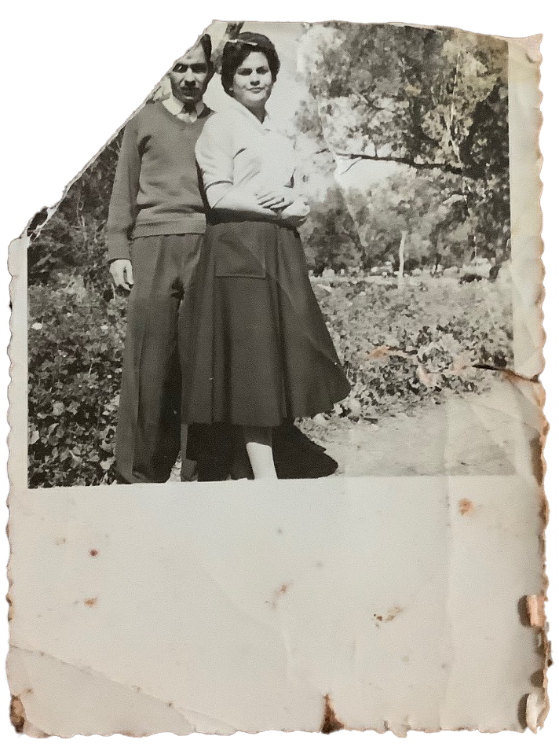, עם ירדן, עם סוריה ועם
לבנון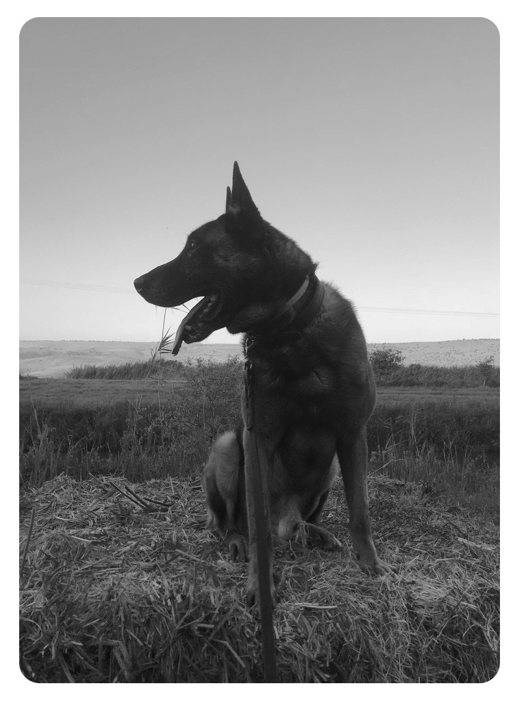, כפי שנקבע בהסכמי שביתת הנשק שנחתמו בשנת 1949, לאחר
מלחמת העצמאות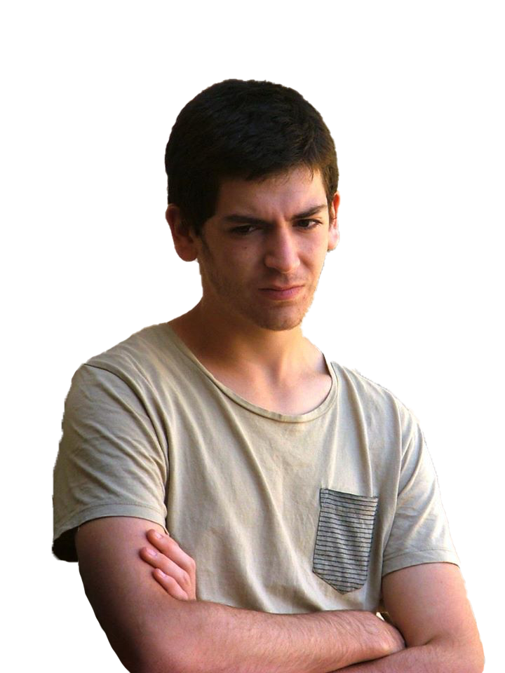 ועד מלחמת ששת הימים בשנת
1967.
שמו
ניתן לו מכך שבמפות המודפסות שלפני מלחמת ששת הימים, הוא סומן ב
צבע ירוק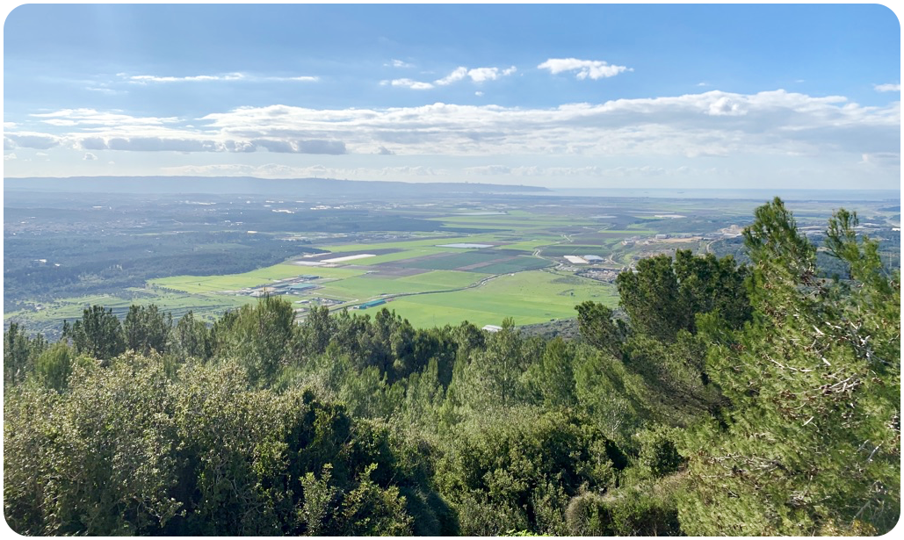.
כינויים נוספים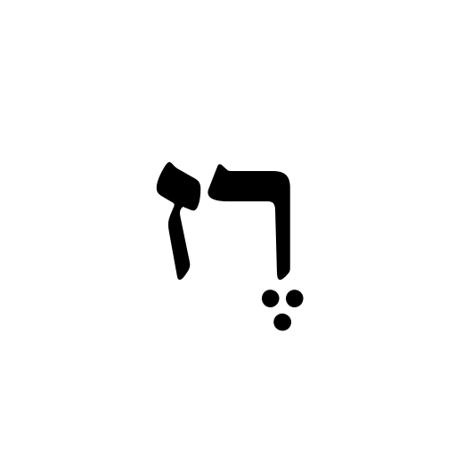 לקו הירוק הם "
גבולות 4 ביוני 1967", "
גבולות 67" וגם "
גבולות 48“.
גבולותיה של ישראל לפני
1967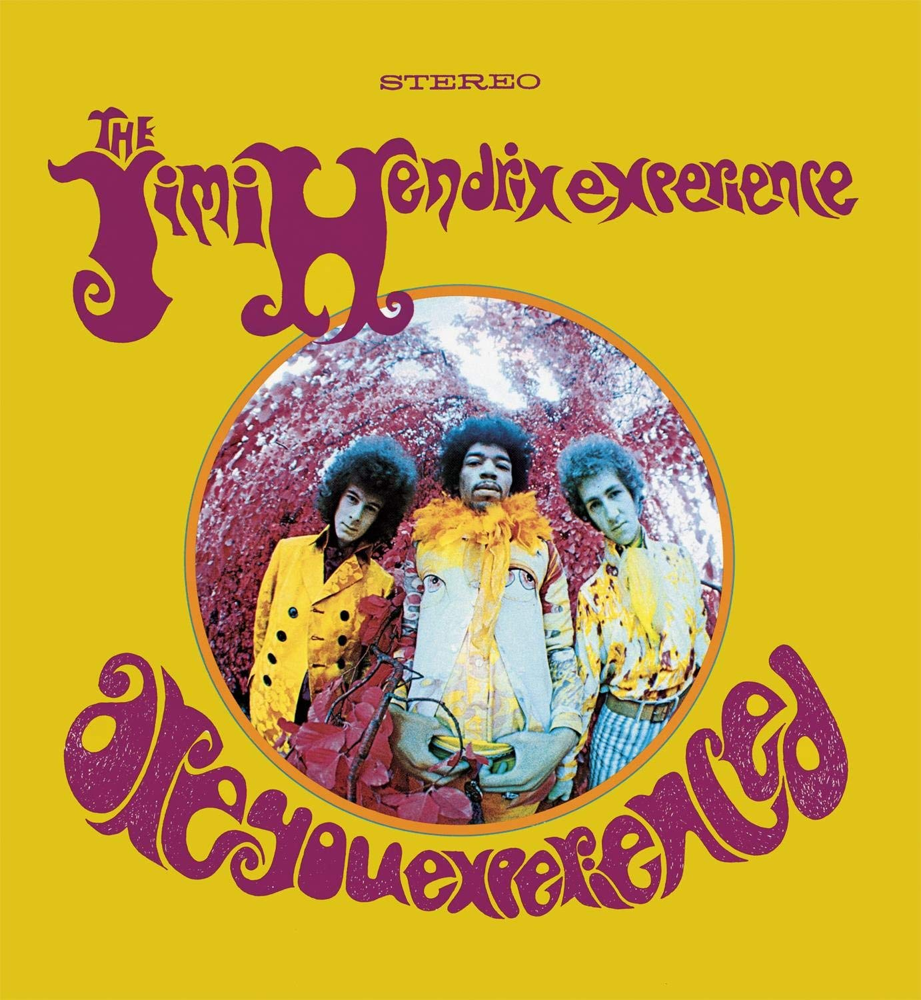 שיקפו את פרישת הכוחות ה
ישראלים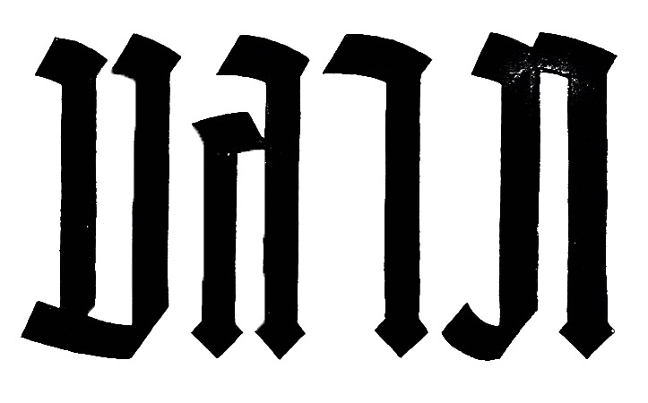 והערבים בעקבות הסכמי
שביתת הנשק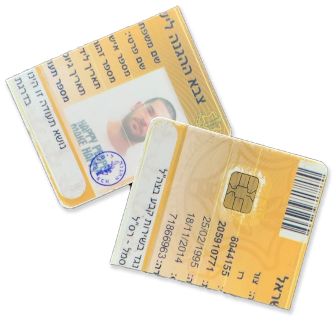 לאחר מלחמת
העצמאות
. רשמית לא היה זה קו גבול אלא קו הפרדת הכוחות בין ישראל לשכנותיה. רוב חלקי ה
קו ירוק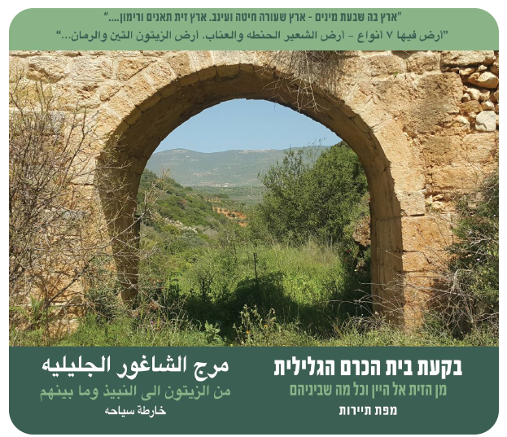 משמשים היום כגבול מינהלי בין השטחים עליהם חלה ריבונות ישראל, לבין שטחים המנוהלים על-ידה באמצעות
ממשל צבאי או על-פי הסכמים עם הרשות הפלסטינית. לדוגמה, בהסכם ל
שיתוף פעולה שנחתם בין ארגון מגן דוד אדום ומקבילו הסהר האדום ה
פלסטיני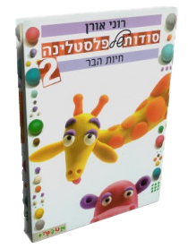 בדצמבר 2005 נקבע כי הקו הירוק יגדיר את
הגבול בין תחומי הפעילות הגאוגרפיים של הארגונים.
הקו הירוק הקיף
78% מ
שטחו המערבי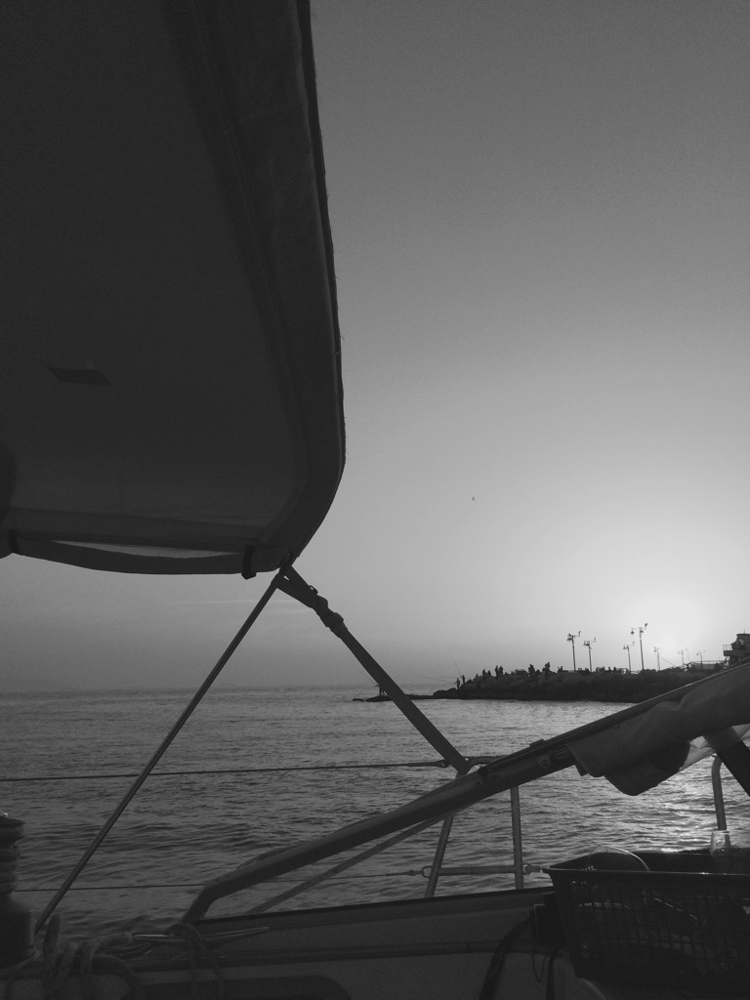 של
המנדט הבריטי שהחל מ-1922 כבר לא כלל את עבר הירדן המזרחי. הוא חפף פחות או יותר את הגבול של שטח המנדט עם סוריה ולבנון, את רוב הגבול עם
מצרים, ואת הגבול עם ירדן בערבה ומטירת צבי ועד חמת גדר. חלק גדול מ
אזור ההר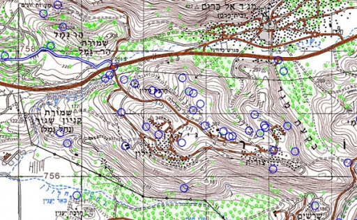 ב
מרכז הארץ
נכבש על ידי ירדן ב-1948. שטח זה סופח על ידי ירדן וכונה "
הגדה המערבית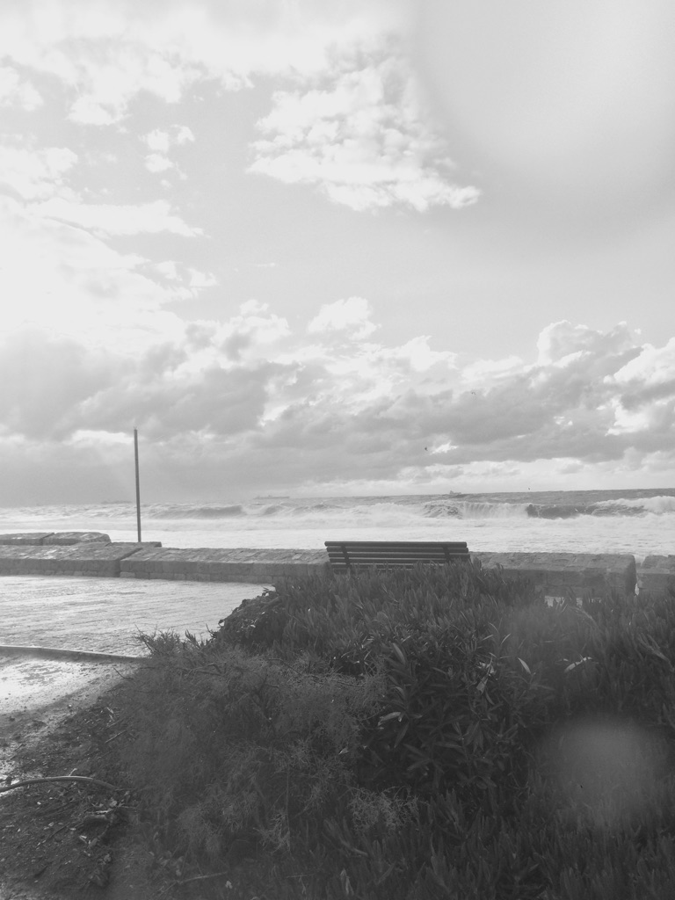", כלומר, השטח שממערב לנהר הירדן, כדי להבדילו מיתר ממלכת ירדן דאז שנמצאה ממזרח ל
נהר הירדן
. בישראל השטח נקרא "יהודה ושומרון". רצועה צרה לאורך מישור ה
חוף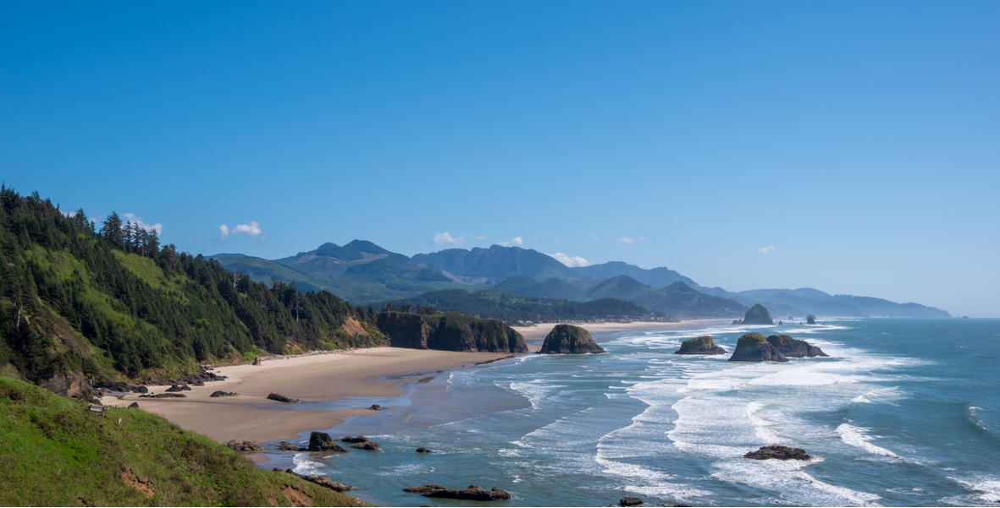 הדרומי עברה לשליטה צבאית מצרית, וכונתה "רצועת עזה".